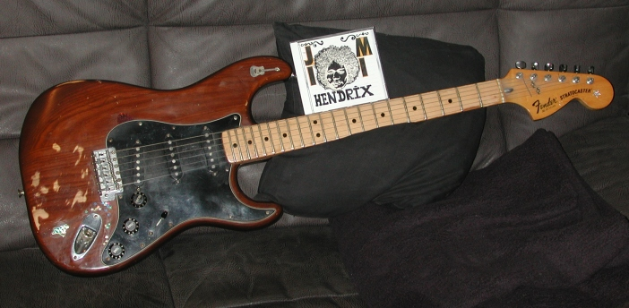
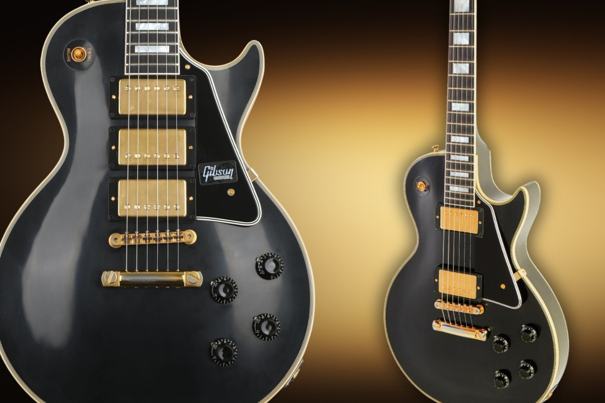
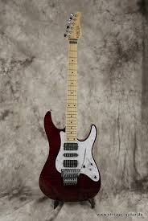
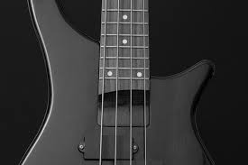

Різновиди та форми електрогітар
Кожна форма електрогітари — це не просто зовнішній вигляд, а унікальна ергономіка, баланс ваги та характерний сустейн, що формувалися десятиліттями у рок- та метал-музиці.

Stratocaster (Стратокастер)
Найвідоміша та найуніверсальніша форма у світі, створена Лео Фендером у 1954 році. Має два глибоких вирізи (роги) для зручного доступу до верхніх ладів та скоси на корпусі для максимальної ергономіки. Традиційно комплектується трьома сингловими звукознімачами, що дають яскраве, «скляне» та динамічне звучання, ідеальне для блюзу, класичного року, фанку та сольних партій.
Універсальність та класика
Les Paul (Лес Пол)
Легендарна форма від компанії Gibson. Має масивний суцільний корпус із червоного дерева (махагоні) з кленовим топом, що забезпечує неймовірно довгий сустейн (протяжність звуку) та глибокий, теплий, оксамитовий тембр. Оснащується двома хамбакерами, які чудово справляються з важким перевантаженням без зайвого фону. Це вибір для важкого року, блюз-року та важкого металу.
Потужний звук та сустейн
Superstrat (Суперстрат)
Модифікація класичного Стратокастера, розроблена в 1980-х роках для швидкісних шред-гітаристів та важкої музики (Jackson, Ibanez, ESP). Корпус зазвичай має більш тонкий швидкісний гриф, агресивні загострені роги та комбінацію звукознімачів типу H-S-S або H-H (хамбакери для потужного дисторшну). Часто оснащується тремоло-системою Floyd Rose для екстремальних підтяжок.
Швидкість та важкий металАкустичні та бас-гітары
Фундамент акустичного звучання та ритм-секції. Інструменти, які формують глибину та каркас будь-якої музичної композиції.

Acoustic Guitar (Вестерн / Дредноут)
Має масивний великий корпус та металеві струни з високим рівнем натягу. Завдяки об'ємному барабану інструмент видає дуже гучний, насичений, дзвінкий та глибокий тембр. Акустична гітара ідеально підходить для акомпанементу, виконання балад, поп-року, кантрі та чіткої гри медіатором.
Глибокий дзвінкий звук
Бас-гітара
Традиційний інструмент ритм-секції, який зазвичай має 4 товсті струни, налаштовані на октаву нижче за звичайну електрогітару. Бас-гітара створює незамінну щільність звучання, зв'язуючи партію ударної установки з іншими інструментами в гурті. Вона забезпечує низькочастотний фундамент, кач та драйв у будь-якому жанрі.
Низькі частоти та ритмДетальна будова та анатомія гітари
Технічний розбір ключових елементів конструкції електрогітари, які безпосередньо впливають на стабільність строю, зручність гри та формування сигналу.
Гриф та анкерний стержень
Гриф піддається величезному натягу з боку металевих струн. Щоб його не зігнуло дугою, всередині по всій довжині вмонтовано регульований сталевий анкерний стержень. Правильне налаштування його натягу дозволяє виставити оптимальний мінімальний прогин грифу, щоб струни не брязкали по ладах, але при цьому затискалися максимально легко.
Звукознімачі та темброблок
Електроніка складається зі звукознімачів, потенціометрів гучності/тону та перемикача. Сингли (Single-Coil) мають одну котушку і забезпечують яскравий, відкритий звук, але схильні ловити зовнішні електромагнітні наводки. Хамбакери (Humbucker) складаються з двох котушок у протифазі, що повністю компенсує та придушує зайвий фон, видаючи щільний, сфокусований і потужний сигнал для дисторшну.
Екранування електроніки
Для боротьби з паразитними шумами, фоном від розеток, комп'ютерів та ламп внутрішні порожнини корпусу (гніздо темброблоку та звукознімачів) покривають струмопровідним шаром. Найчастіше використовують графітовий лак або обклеюють стінки спеціальною мідною чи алюмінієвою фольгою, замикаючи цей контур на "землю" схеми. Це створює клітку Фарадея і мінімізує будь-який гул інструменту.
Бридж (Струнотримач) та Мензура
Бридж утримує струни на корпусі. Він буває фіксованим (Hardtail) або рухомим (Tremolo/Floyd Rose). Кожне сідло бриджу регулюється окремо для налаштування мензури — робочої довжини струни від верхнього поріжка до точки дотику на сідлі. Правильне регулювання гарантує, що гітара буде ідеально строїти на будь-якому ладу по всьому грифу.
Корисні відеоматеріали та гайди
Відбудова інструменту, вибір першої гітари та правильний догляд за електронікою — дивись перевірені відеоогляди.
Як обрати першу електрогітару та комбік
Покроковий гід про вибір дерева, форми корпусу та першого підсилювача для домашніх занять без зайвих витрат.
Перейти на YouTube →Повна відбудова та екранування гітари
Практичне відео про те, як налаштувати прогин анкера, опустити струни на комфортну heights та захистити гітару від фону за допомогою графіту чи фольги.
Перейти на YouTube →